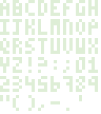

Phaser supports both bitmap fonts and CSS fonts to render text. In this
game we will use monospaced bitmap fonts, implemented
in the Phaser.RetroFont class.
Bitmap fonts are implemented with an image asset containing all the characters we want to render. They are similar to spritesheets:

Bitmap fonts are not game entities. We need to associate a
Phaser.Image instance to a
Phaser.RetroFont one to be able to
render a string of text.
Phaser.Retrofont handles the mapping
between the font image to single characters, as well as which string of
text we will render. Phaser.Image
contains the rendered string and will display it on screen.
// on preload
game.load.image('font-asset', 'font.png');
// on create
const CHARSET = '012345689'; // your full charset
let font = game.add.retroFont('font-asset', charWidth, charHeight, CHARSET);